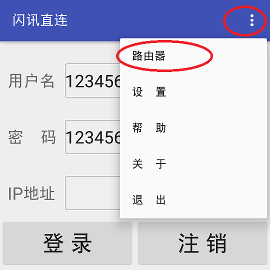

第二步：点击右上角菜单（三个点），在弹出的菜单选项中点击路由器，进入路由器界面
第三步：第一次通过内置浏览器进入路由器需要输入密码（有的浏览器还需要输入用户名），再点击确认
第四步：登录进入路由器界面，找到WAN口的IP，不同路由器界面不同，自己找一下
第五步：路由器界面放大一下，把WAN的IP记住，然后返回主界面
第六步：把刚才记住的WAN口IP填在IP地址一栏，最后，点击登录
另外：点击右上角的菜单（三个点），在弹出的菜单选项中点击设置，进入设置界面
填写常用外网网段和路由器IP，然后点击全部保存。关于设置界面的具体说明，请点击这里